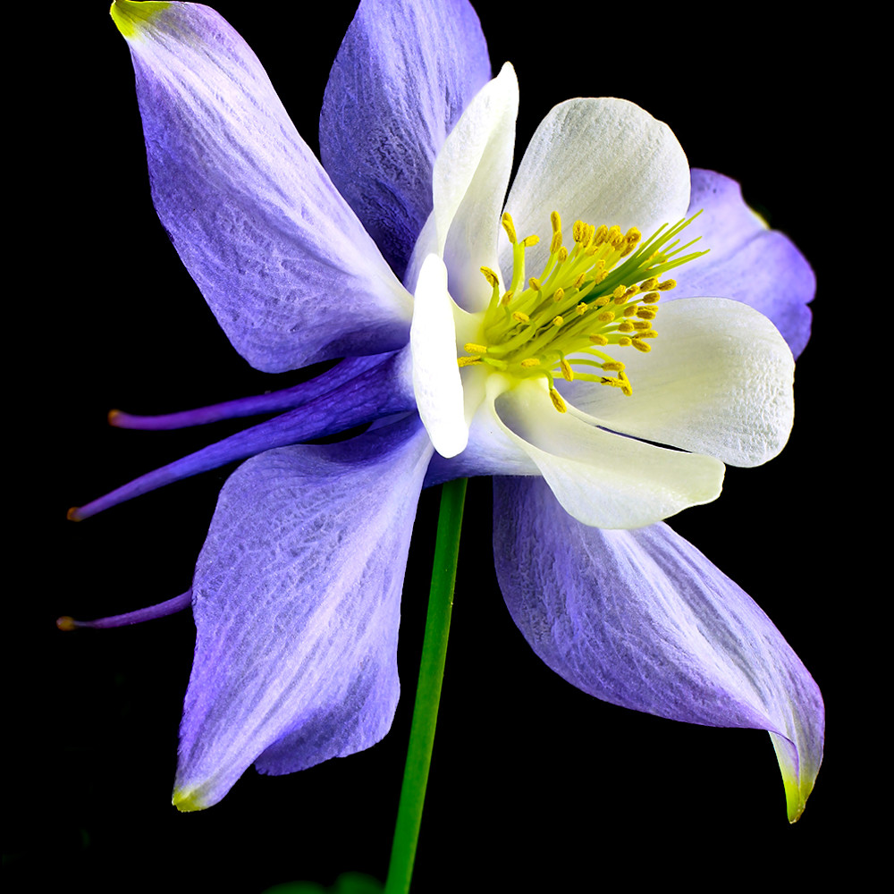
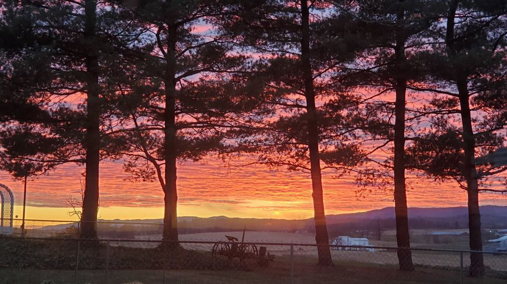
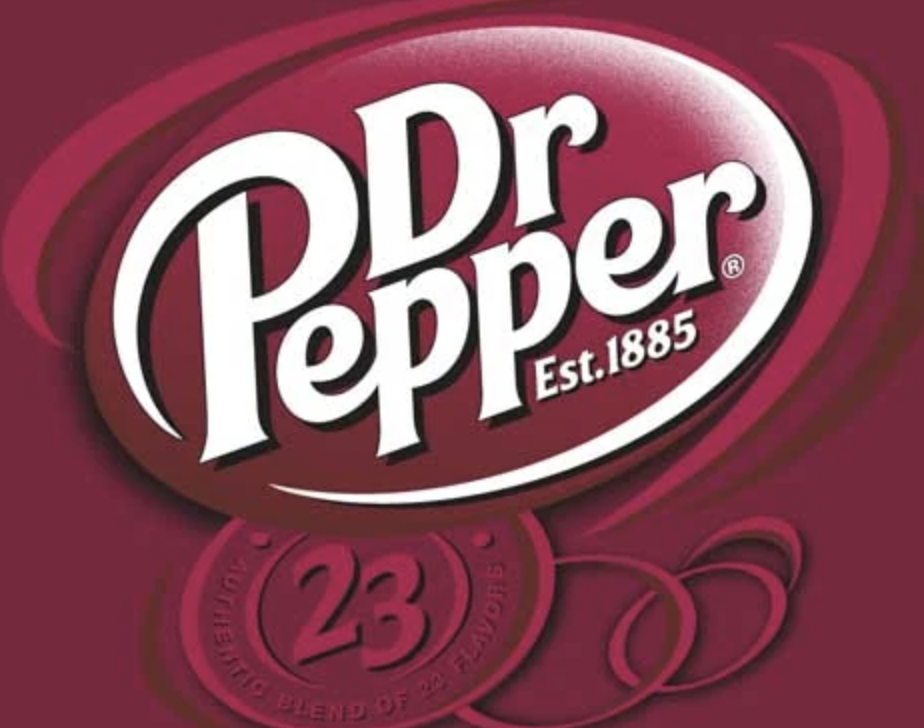
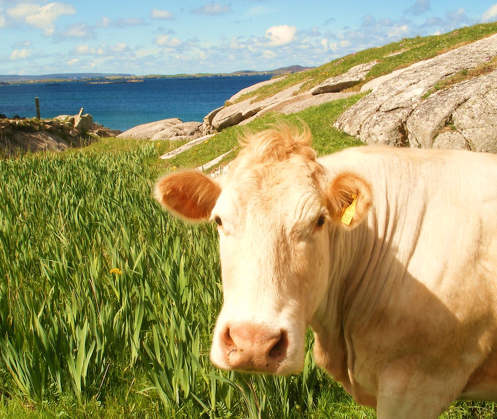
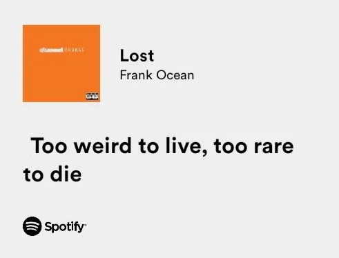

Hello,world! My name is SaraBeth
This is a webpage all about me. My likes, dislikes, hopes, dreams, and favorite things
Biography
I'm currently working at Pippas Cafe as a hostess, but I just got a new job! I go to Cox Mill High School as a sophmore and am on the Womens Soccer team, I am an AoIT student in the graphic design track. After high school I'd like to become an aviator in the militrary however I'm not sure what branch yet. I plan on applying to the Coast Guard, Naval, and Air Force academies, if I didn't get into any of the academies I plan on going to NC State for aerospace engineering. I'm the youngest daughter in my family of four, at home its me my dad my mom our 3 dogs my cat and my grandma and her husband. Currently my brother is enlisted in the Coast Guard and stationed in Bayonne, NJ.
In my spare time I like to play soccer, hangout with my friends and my boyfriend and go shopping. My favorite stores are Lululemon, American Eagle, H&M, Nike and Target.
My Favorite Quoatation
"We go to the moon, not because it is easy, but because it is hard" - John F. Kennedy
My Places to Eat
- Chick-fil-a
- Cava
- Basilicos
- Chipotle
- Bone Fish
My Top Eight Favorite Disney Movies, in order
- The Lion King
- Tangled
- High School: The Musical
- Mulan
- Frozen
- Aladdin: Live Action
- 10 Things I Hate About You
- The Little Mermaid
Countries I'd Like to Visit, and What I'd like To Do There
- Mexico
- Markets
- Go to Aztec temples
- Day of the Dead
- Greece
- See all the cats on the streets
- Eat Food
- Stay in Mykonos
- Spain
- Eat Food
- Visit La Sagrada Familia
- Ibizia Beaches
Other Favorite Things
| Favorite Flower | Purple Colombine |  |
|---|---|---|
| Favorite Time of Day | Sunset |  |
| Favorite Drink | Dr. Pepper |  |
| Favorite Animal | Cow |  |
| Favorite Song | "Lost" by Frank Ocean |  |
| Favorite Color | Lilac Purple |
Contact Information
Email: sraso6034@cabarrus.k12.nc.us
Phone: 123-456-7890